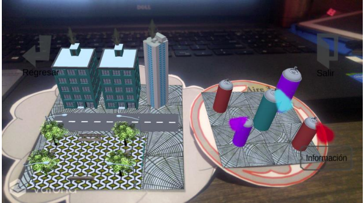
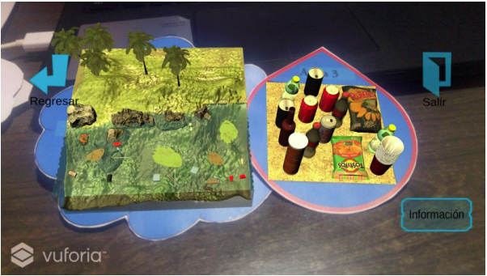
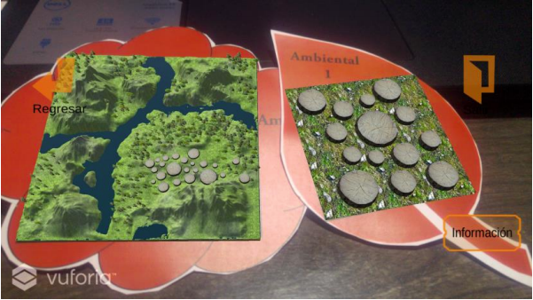
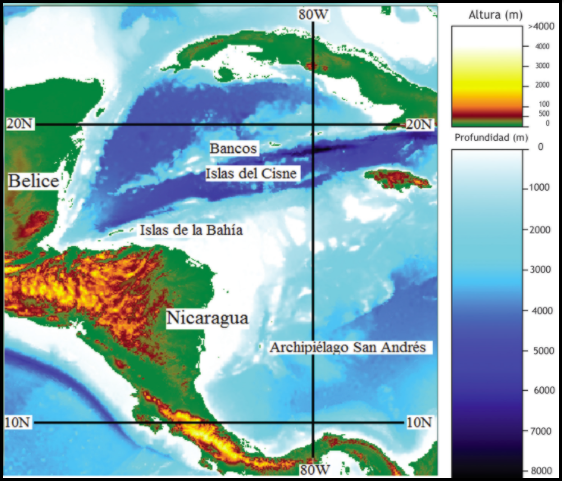
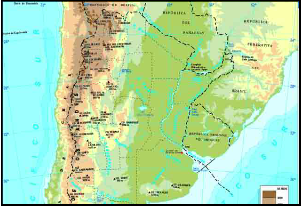
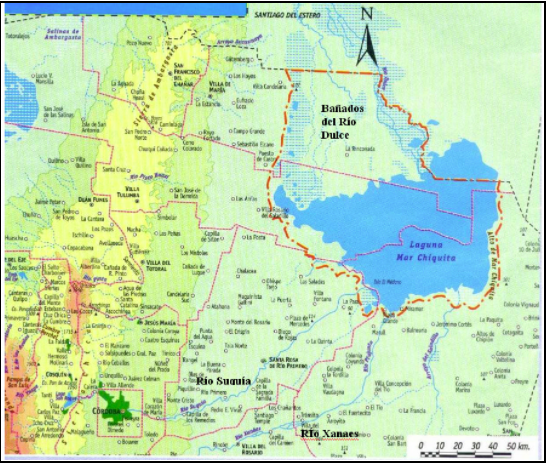
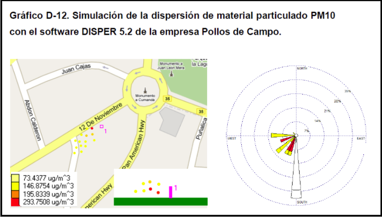
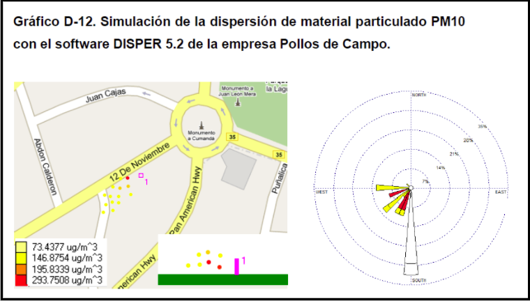

LA COMPUTACION GRAFICA APLICADA AL MEDIO AMBIENTE
1. Prototipo movil de realidad aumentada para fomentar el cuidado del medio ambiente.
En este proyecto de desarrollo una aplicación con realidad aumentada para fomentar el cuidado del medio ambiente en la educación primaria. Se analizaron los escenarios que se querían modelar investigando información acerca del medio ambiente. Se examinó más a detalle la contaminación ambiental, la contaminación del aire y la contaminación del agua.
Herramientas utilizadas
Se creó la aplicación con la librería de Vuforia y el software Unity, para esto fue necesario crear los marcadores y después los modelos en 3D.Vuforia: Es un kit de desarrollo de software de realidad aumentada para dispositivos móviles que permite la creación de aplicaciones de realidad aumentada. Utiliza tecnología de visión por computadora para reconocer y rastrear imágenes planas y objetos 3D en tiempo real.
Unity 3D: Es uno de los programas más completos para desarrollar videojuegos. El editor es muy sencillos y potente
Implementación
  Resultados
Una vez terminada la aplicación se procedió a realizar pruebas en una escuela primaria, en este caso en el Colegio Americano, alumnos de edades entre 8 a 10 años. La aceptación fue muy alta siendo más del 90% del total de niños, quienes fue de su agrado la aplicación por mostrar explícitamente los factores que pueden afectar o ayudar al medio ambiente. Para los maestros la aceptación fue del 100% ya que consideraron que es divertido e interactivo para los alumnos. Los alumnos se interesaron más por temas acerca del cuidado del medio ambiente, aumentó su curiosidad e incluso pidieron más modelos en 3D.
2. Simulación de la altura máxima de ola en huracanes con trayectorias similares en el mar Caribe y su relación con los impactos costeros generados
Simulando con modelos numéricos las distribuciones espaciales de la energía de las olas huracanes con trayectorias similares, se estudia la relación entre las características del huracán y la altura de las olas y la magnitud de los impactos que estos produjeron en las costas. Se encuentra que la mayor altura de ola generada por un huracán no depende de su intensidad o categoría, sino más bien, de su velocidad de avance. Huracanes como Fifí en 1974 y Joan en 1988, produjeron las mayores alturas de olas en la cuenca del Caribe y tuvieron la capacidad de generar el mayor impacto costero. La poca información que se encuentra apoya este resultado. Sin embargo, el impacto que puede generar un huracán no solo depende de su velocidad de avance, sino también, de su trayectoria hacia la costa, de la batimetría en la plataforma continental, de la existencia de cayos e islas que actúan como disipadores de la energía de las olas. Se argumenta también, que el impacto depende de la mayor vulnerabilidad de la creciente población costera y, posiblemente, de los avisos oportunos que las instituciones gubernamentales emiten ante estos eventos océano-meteorológicos.
Palabras claves: Impacto por huracanes, altura del oleaje, velocidad de avance, mar Caribe, modelos numéricos.


3. Analisis y simulacion de riegos ecologicos en un gran sistema Hidrologico Endorreico
El ecosistema cerrado en estudio es único en América Latina, constituido por la laguna salada más grande de esta región, Mar Chiquita y los bañados del Río Dulce, con extensión cercana a los 10.000 Km2 . Este complejo sistema es pobremente conocido desde el punto de vista hidrológico y su alta biodiversidad justifica que se lo haya declarado sitio protegido internacionalmente por la convención RAMSAR. Este sistema está bajo riesgo ante la acción antrópica como el catastrófico antecedente de la desecación del Mar Aral. Para estudiar la disminución de la laguna ante posibles extracciones de agua del tributario principal, se desarrolló un modelo numérico de balance hídrico. Previamente se obtuvo, analizó y depuró gran cantidad de información hidrometeorológica, que fue usada para simular el comportamiento durante un período de treinta años, de 1967 a 1997. El modelo se empleó en intervalos de seis meses y un año, considerando por separado la laguna de los bañados e incluyendo la variación de las pérdidas (evaporación y evapotranspiración), en función de la salinidad, y de los aportes pluviales con el nivel de la laguna. El análisis de los resultados ha mostrado la importancia del régimen del río Dulce como principal tributario; y el alto impacto negativo sobre la laguna de las extracciones de caudal aguas arriba debido al incremento de la salinidad, pérdida de biodiversidad y severa reducción de sus dimensiones. Finalmente, considerando la natural reducción del río Dulce a través de los bañados, se estimaron los caudales que ingresan a la laguna para distintos niveles de agua.
 
4. Simulación de la dispersión de contaminantes en el aire de la ciudad de Ambato emitidos por fuentes fijas y por la actividad del volcán Tungurahua, mediante la utilización de los softwares ambientales especializados Disper versión 5.2 y Screen View
La contaminación atmosférica en los últimos años se ha convertido en uno de los principales problemas ambientales, debido entre otros muchos factores a desastres naturales y al impacto de las actividades antropogénicas. Aspectos que han producido un efecto perjudicial en la calidad del aire y que han provocado la preocupación de la sociedad y de sus autoridades. La ciudad de Ambato a través de la Universidad Técnica de Ambato y la administración del Municipio de Ambato dentro de su plan de gestión ambiental de su ciudad, han considerado importante la investigación de la contaminación causada por las chimeneas de las industrias existentes en la región clasificadas como fuentes fijas, así como el estudio del efecto causado por la reciente actividad del volcán Tungurahua que incide en la calidad del aire de la ciudad. Como parte del proyecto “Diagnóstico de las emisiones por fuentes fijas y diseño de un programa de monitoreo para el control de la calidad del aire en la ciudad de Ambato”, se seleccionó del catastro de la ciudad de Ambato las empresas industriales y de servicios consideradas fuentes fijas de contaminación del aire, para lo cual se calculó el tamaño muestral y se determinó una muestra final de 42 empresas, las mismas que se encuentra detallada en el Anexo A, Tabla A-1. De las empresas seleccionadas se realizó el estudio sobre la simulación de la dispersión de contaminantes en el aire de la ciudad de Ambato, emitidos por fuentes fijas y por la actividad del volcán Tungurahua, mediante la utilización de los softwares ambientales especializados Screen View y Disper 5.2, mediante el cual se obtuvo un diagnóstico general del cumplimiento de los parámetros del Texto de Legislación Ambiental Secundario TULAS, así como de otros indicadores adicionales evidenciado en la Tabla A-14. Se estableció los valores de la concentración por la dispersión y alcance de los contaminantes a nivel del 18 suelo mediante simulación con Screen View y se profundizó el análisis de la simulación para las empresas que reportaban emisiones significativas de contaminantes mediante el uso del software Disper 5.2, evidenciados en la Tabla A-8 a la A-11, así como en el Gráfico D-10 al D-15. Al no ser Disper 5.2 un modelo diseñado para la evaluación de penachos volcánicos, se realizaron dos pruebas del modelo gaussiano para simular la dispersión de las emisiones del volcán Tungurahua. Mediante ejercicios comparativos con imágenes satelitales de los flujos de ceniza reportados en el Gráfico D-16 y D-17, se estableció la existencia de la relación con las emisiones del volcán Tungurahua de los datos de material particulado medidos en la estación de control de la calidad del aire de la Dirección de Higiene y Ambiente del Municipio de Ambato señalado en la Tabla B-17 y se caracterizó la calidad del aire de acuerdo al índice ICAIRE de las zonas de influencia de las empresas estudiadas y evaluadas en la Tabla A-13.
 
